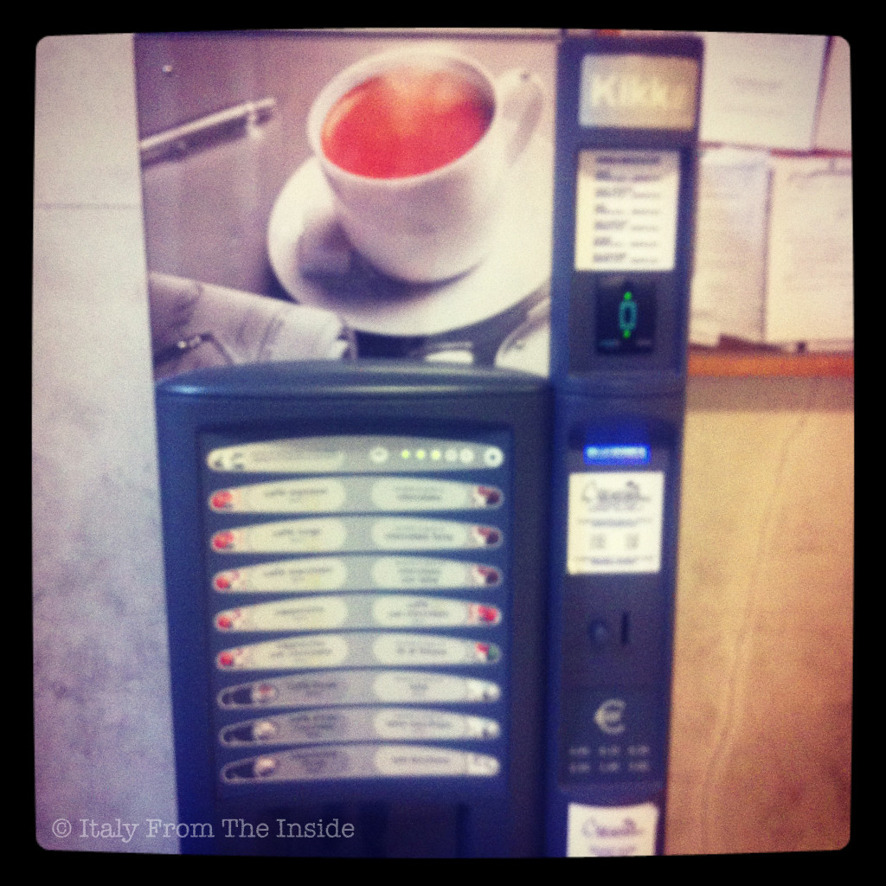

Everybody knows that Italians are coffee lovers and yet, for some reasons, I was surprised to see this coffee vending machine in my son's elementary school. However, it all makes sense: the pausa caffè (coffee break) is a must in Italy, therefore why not to give the school staff the chance to enjoy their daily caffettino in a super fast and easy way, and without leaving the premises? Bellissimo.